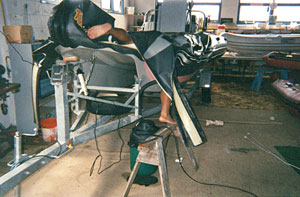
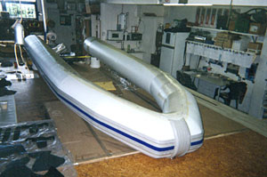

Retubing
New tube sets in Hypalon, PVC or TPU for any hull. The cheapest way to get a boat that looks and feels new.
Hypalon vs PVCAuckland · established over 25 years
Tubes, hull, outboard, electronics — and the trailer underneath it. One workshop in Glenfield, any brand, Hypalon or PVC.
Phone or drop in is fastest. After hours, send us the details and photos and we'll pick it up next working day.
What we do
Most yards do tubes. We do tubes, and everything the boat needs to leave the yard finished — so it's one job, one place, one conversation.
New tube sets in Hypalon, PVC or TPU for any hull. The cheapest way to get a boat that looks and feels new.
Hypalon vs PVCPunctures, seam splits, leaking valves, loose transoms, soft floors, UV damage — plus aluminium and fibreglass hull work.
Tube and hull repairsServicing on most outboard brands, plus GPS, sounder, VHF, radar and stereo installs and fault-finding.
Servicing and installsLights, brakes, structural repairs, rust prevention, alterations — and a warrant of fitness while the boat is here.
Trailer workOne-off design and build, marker buoys and fenders to order, hovercraft skirts, and rubber inner tubes vulcanised in-house.
What we buildLeisure and offshore drysuits serviced and repaired. Service agents for Musto UK/NZ and Line 7 New Zealand.
Drysuit servicingThe decision most owners face
It's the question that decides what a retube costs and how long it lasts. The short version: Hypalon — properly, chlorosulfonated polyethylene — is chosen for longevity and dry abrasion resistance, and averages around 30 years. PVC is chosen for fast production and a lower price, and averages around 7.
Which is right depends on how the boat is used, where it's stored, and how long you plan to keep it. A boat on a mooring in full Auckland sun is a different problem from a tender that lives under cover.


Track record
Anyone can patch a tube. These are the jobs that show what the workshop can actually make.
Developed with Project Jonah to refloat stranded and injured whales and carry them back to sea — a world first. Sets are still built here and shipped overseas.
Repairs and retubes for New Zealand surf life saving craft — boats that get launched through breaking surf and have to be right.
Directional air fingers produced for the Auckland Airport rescue hovercraft, alongside hovercraft skirts for the leisure market.
Service agents through the Whitbread, the Volvo Ocean Race and the BT Global Challenge — kit that has to keep working a long way from help.
Winter is the quiet bench — the best time to book a retube or a commercial refit before the season starts.
From September the workshop fills up fast. If your boat needs to be ready for Labour Weekend, talk to us early rather than late.
That's the most common call we get, and it's a fair question. Ring us and describe it, or bring the boat in — we'll tell you straight whether it's a repair, a retube, or not worth your money.